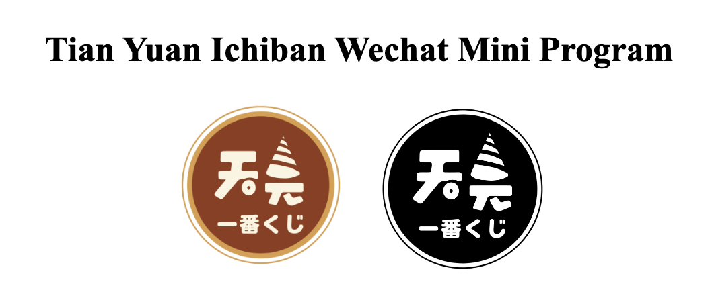
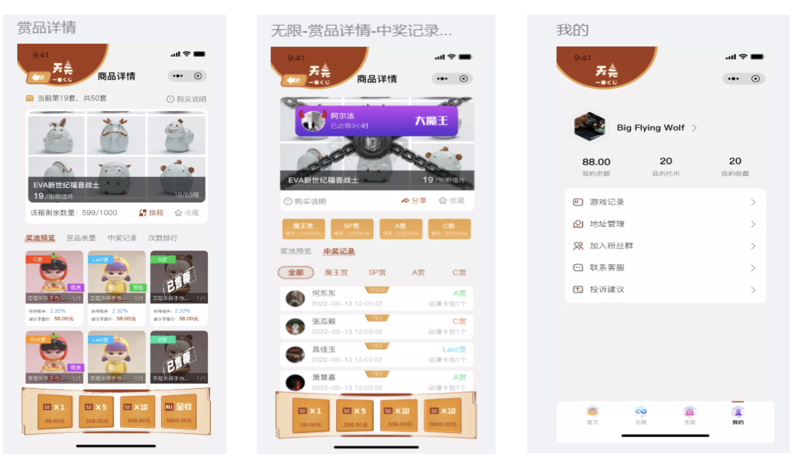
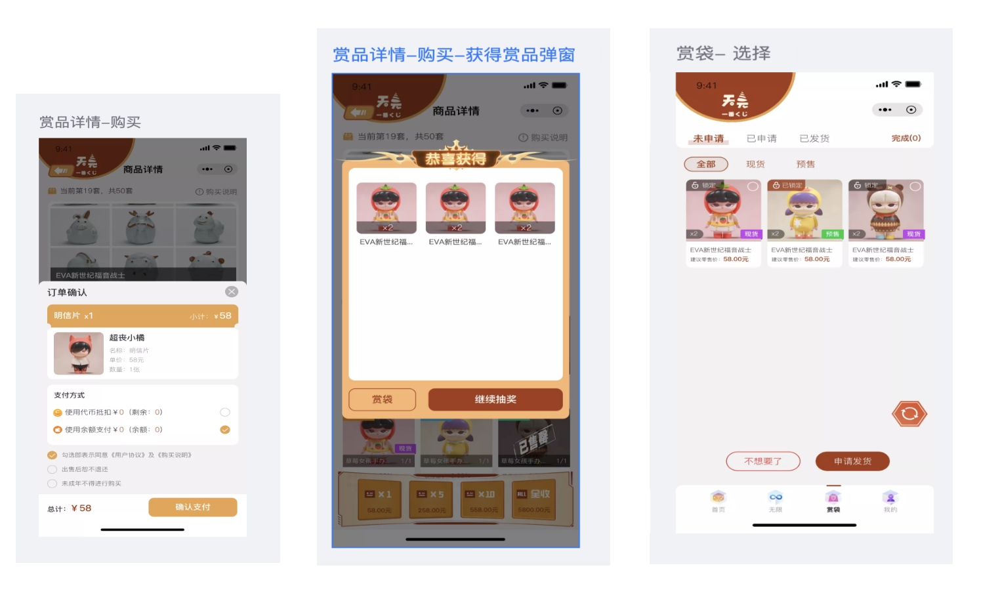
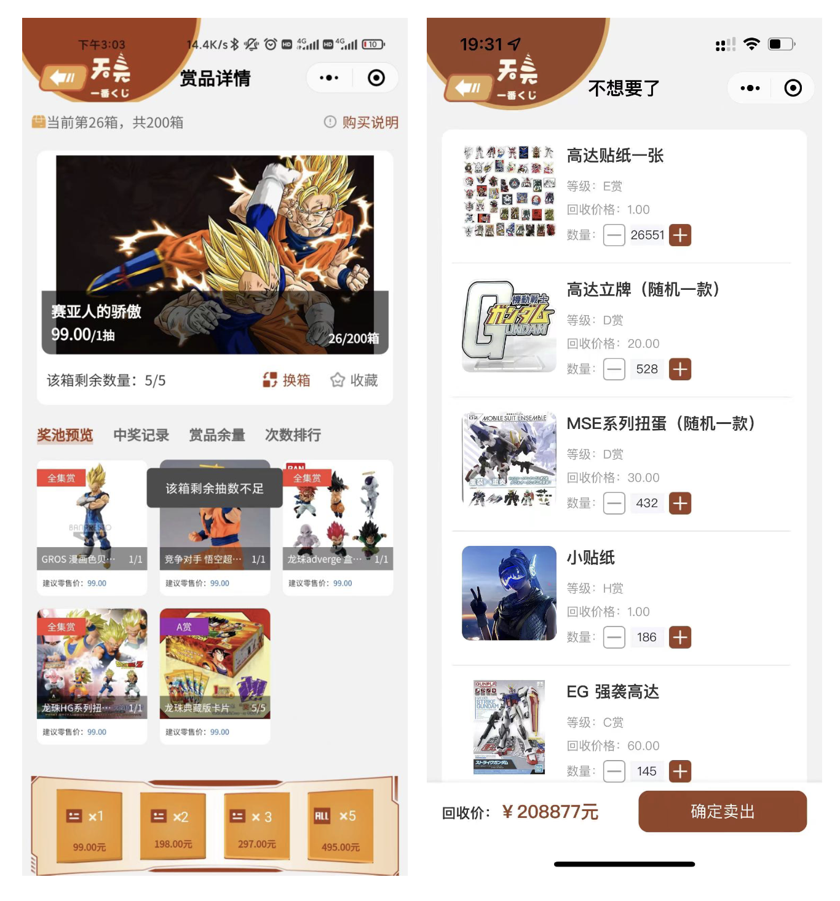
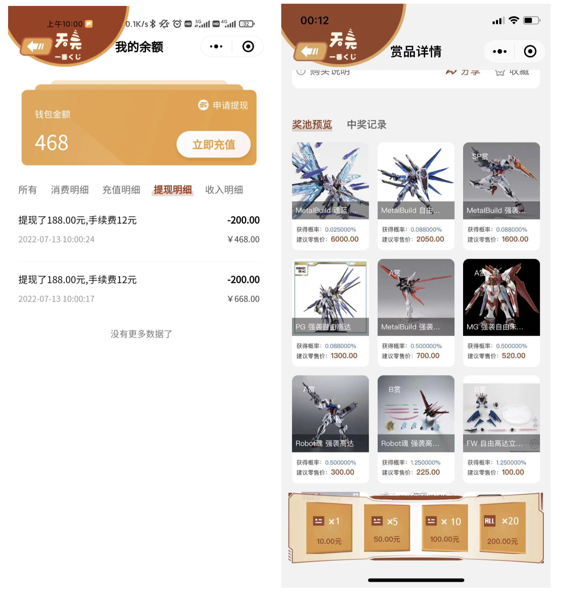
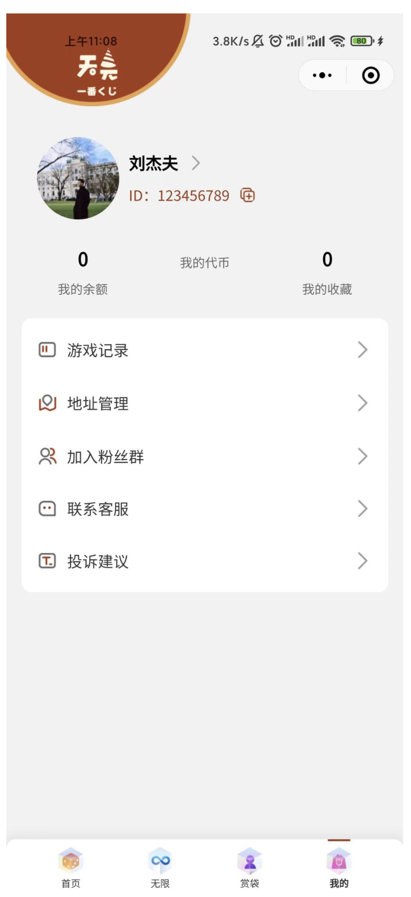

Back to Homepage
Tian Yuan Ichiban Lottery
Commercial Product · WeChat Mini Program · 2022–2023
Overview

The Tian Yuan Ichiban WeChat Mini Program was launched in the summer of 2022 and went offline in the spring of 2023.
This page serves as a project display compiled at the end of 2024.
Due to project closure and team disbandment, many files were not retained. The images included are past screenshots.
1. Requirements Document
Overview
A blind box lottery mini-program, primarily offering ACG figurines as prizes.
System Modules
User Side (Mini Program)
- Login: Users log in through WeChat authorization.
- Homepage: Banner rotation, lottery categories (scrollable), sorting options, product display (two per row with names, prices, and stock).
Lottery Mechanics
- Dual Random Mode: Randomly triggers two additional draws.
- Boxing Mode: Each round has 5 draws with guaranteed prizes.
Admin Panel (Backend)
- Banner Management
- Category Management
- Prize Management: Set amounts, recovery prices, and images.
- Order Management: View user orders and process shipments.
- Probability Adjustments: Set and adjust draw probabilities.
2. Program Interface
Main Interfaces
Home Page & Lottery Page


Reward Bag & Prize Details

Balance & Draw History

User Profile

3. Operation Summary
- Launched: Summer 2022
- Offline: Spring 2023
- Revenue: Approx. ¥100,000
Challenges & Key Takeaways
- Team & Competition: The team was part-time, and competition was fierce.
- Learning Experience: First-hand experience in product management.
Reflections
The project reinforced my commitment to lifelong learning and entrepreneurship.
Understanding market strategy, research, commercialization, and management is critical for building a successful product.
Demand Analysis (Chinese Only)